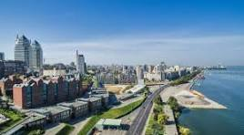
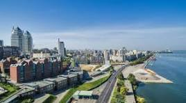

Découvrir l'Ukraine : Le Plus Grand Pays d'Europe
Kiev : Capitale de l'Ukraine

Les autres villes d'Ukraine
 

🌍 Saviez-vous que l'Ukraine est le plus grand pays entièrement situé en Europe ?
Avec ses 603 700 km², elle dépasse largement la France, l'Espagne ou encore l'Allemagne. Terre de plaines immenses, de villes historiques et de paysages variés, l'Ukraine occupe une place unique sur la carte du continent.
Nous allons brièvement approfondir différents points sur ce pays.
Cliquez ici pour les recommandations de la France sur l'Ukraine.
Histoire et Culture de l'Ukraine
L’Ukraine possède une histoire millénaire qui remonte à la Rus' de Kiev au IXe siècle, considérée comme l’un des premiers États slaves. Sous Volodymyr le Grand et Yaroslav le Sage, Kiev devint un centre politique et culturel majeur de l’Europe médiévale. Cette prospérité fut interrompue par l’invasion mongole de 1240, marquant une période de fragmentation et de domination étrangère.
Au fil des siècles, l’Ukraine fut un carrefour stratégique entre l’Europe, la Russie et le Moyen-Orient. Elle a connu l’influence des Cosaques, des Empires polonais et austro-hongrois, puis de l’Empire russe. Le XXe siècle fut marqué par des épisodes tragiques tels que l’Holodomor (grande famine des années 1930), la Seconde Guerre mondiale et la période soviétique.
Depuis son indépendance en 1991, l’Ukraine affirme son identité nationale à travers sa langue, sa culture et ses traditions. Les arts, la littérature et la musique ukrainienne reflètent une résilience culturelle face aux bouleversements historiques. Les danses folkloriques, les chants traditionnels et les icônes religieuses témoignent de la richesse patrimoniale du pays.
Éléments clés de l’histoire
- Rus' de Kiev : Fondation au IXe siècle, apogée sous Volodymyr et Yaroslav.
- Cosaques : Symboles de liberté et de résistance.
- Holodomor : Famine dévastatrice des années 1930.
- Indépendance : Proclamée en 1991 après l’effondrement de l’URSS.
Culture ukrainienne
- Langue : L’ukrainien est la langue officielle et un pilier identitaire.
- Folklore : Danses, chants et costumes traditionnels.
- Religion : Majorité chrétienne orthodoxe, avec une forte tradition spirituelle.
- Arts : Littérature, peinture d’icônes et musique contemporaine.
Importance pédagogique
L’histoire et la culture de l’Ukraine permettent de comprendre son rôle en tant que carrefour de civilisations et sa résilience face aux crises. Elles éclairent les enjeux actuels et renforcent la compréhension des dynamiques européennes.
Géographie et Nature de l'Ukraine
L’Ukraine est le plus grand pays d’Europe entièrement situé sur le continent, avec une superficie de plus de 603 000 km². Elle partage des frontières avec la Russie, la Biélorussie, la Pologne, la Slovaquie, la Hongrie, la Roumanie et la Moldavie. Son accès à la mer Noire et à la mer d’Azov lui confère une importance stratégique et économique majeure.
Le territoire ukrainien est caractérisé par de vastes plaines fertiles, appelées steppes, qui constituent l’un des principaux atouts agricoles du pays. Ces terres, souvent surnommées le grenier de l’Europe, permettent une production abondante de blé, de maïs et de tournesol.
À l’ouest, les montagnes des Carpates offrent des paysages pittoresques, des forêts denses et une biodiversité remarquable. Au sud, la Crimée est connue pour son climat doux, ses côtes et ses vignobles. Le Dniepr, fleuve emblématique, traverse le pays du nord au sud et joue un rôle essentiel dans l’irrigation, l’hydroélectricité et le transport.
Caractéristiques géographiques
- Superficie : Plus de 603 000 km².
- Relief : Majorité de plaines, Carpates à l’ouest, Crimée au sud.
- Hydrographie : Fleuves majeurs comme le Dniepr, le Dniestr et le Donets.
- Climat : Continental, avec des hivers froids et des étés chauds.
Nature et biodiversité
- Faune : Loups, lynx, ours bruns dans les Carpates.
- Flore : Forêts de chênes, pins et hêtres.
- Réserves naturelles : Parc national des Carpates, biosphère d’Askania-Nova.
- Écosystèmes : Steppes, montagnes, zones côtières et marais.
Importance pédagogique
La géographie de l’Ukraine explique son rôle de puissance agricole et son importance stratégique en Europe. Sa nature diversifiée illustre la richesse écologique du pays et la nécessité de préserver ses ressources naturelles. Comprendre ces aspects permet d’analyser les enjeux économiques, environnementaux et géopolitiques actuels.
Villes et Régions Incontournables d'Ukraine
L’Ukraine abrite de nombreuses villes historiques et régions emblématiques qui reflètent la diversité culturelle, géographique et économique du pays. Chaque territoire possède une identité propre, façonnée par son patrimoine, ses traditions et son rôle dans l’histoire nationale.
Kiev (Kyiv)
Capitale de l’Ukraine, Kiev est le cœur politique, économique et culturel du pays. Elle est connue pour ses monuments historiques tels que la cathédrale Sainte-Sophie et le monastère de Lavra. Ville moderne et dynamique, elle combine patrimoine ancien et innovation contemporaine.
Lviv
Située à l’ouest, Lviv est réputée pour son architecture baroque, ses cafés traditionnels et son ambiance européenne. Classée au patrimoine mondial de l’UNESCO, elle est un centre culturel majeur et un lieu incontournable pour découvrir l’histoire de l’Ukraine.
Odessa
Port stratégique sur la mer Noire, Odessa est célèbre pour son escalier Potemkine, ses plages et son rôle dans le commerce maritime. Ville cosmopolite, elle reflète l’ouverture de l’Ukraine vers le monde méditerranéen et oriental.
Kharkiv
Deuxième plus grande ville du pays, Kharkiv est un centre universitaire et industriel. Elle se distingue par ses instituts scientifiques, ses musées et son importance dans le développement technologique de l’Ukraine.
Les Carpates
À l’ouest, la région des Carpates offre des paysages montagneux, des stations de ski et une riche biodiversité. C’est une destination prisée pour le tourisme vert et les activités de plein air.
La Crimée
Connue pour son climat doux et ses côtes pittoresques, la Crimée possède une histoire complexe. Ses vignobles, ses stations balnéaires et ses sites archéologiques en font une région unique dans le paysage ukrainien.
Autres régions remarquables
- Dnipro : Centre industriel et technologique.
- Chernihiv : Ville ancienne avec des églises médiévales.
- Zaporizhzhia : Terre des Cosaques et haut lieu historique.
- Donbass : Région riche en ressources minières et symbole de l’industrie lourde.
Importance pédagogique
Les villes et régions de l’Ukraine illustrent la diversité du pays, entre patrimoine historique, développement économique et richesse culturelle. Leur étude permet de mieux comprendre les dynamiques régionales et l’importance de l’Ukraine dans le contexte européen.
Gastronomie Ukrainienne : Borsch, Varenyky et Plus
La cuisine ukrainienne est réputée pour sa richesse, sa diversité et son ancrage dans les traditions populaires. Elle reflète l’histoire du pays, ses influences régionales et son rôle de carrefour culturel en Europe de l’Est. Les plats emblématiques comme le Borsch et les Varenyky sont devenus des symboles de convivialité et de partage.
Borsch
Le Borsch est une soupe traditionnelle à base de betterave, souvent enrichie de chou, de pommes de terre, de carottes et parfois de viande. Servi chaud, il est accompagné de crème fraîche et de pain de seigle. Ce plat incarne la résilience culinaire de l’Ukraine et reste un incontournable des repas familiaux.
Varenyky
Les Varenyky sont des raviolis ukrainiens farcis de pommes de terre, de fromage, de chou ou de cerises. Ils sont généralement servis avec de la crème fraîche ou du beurre. Ce plat illustre la simplicité et la générosité de la gastronomie ukrainienne.
Autres spécialités
- Holubtsi : Choux farcis de riz et de viande.
- Deruny : Galettes de pommes de terre croustillantes.
- Kholodets : Aspic de viande servi froid.
- Paska : Pain traditionnel de Pâques.
Boissons traditionnelles
- Kvass : Boisson fermentée à base de pain noir.
- Horilka : Eau-de-vie ukrainienne, proche de la vodka.
- Compote : Infusion sucrée de fruits secs.
Importance culturelle
La gastronomie ukrainienne est plus qu’une simple alimentation : elle représente un patrimoine culturel et un vecteur de convivialité. Les repas traditionnels sont souvent associés aux fêtes religieuses, aux célébrations familiales et aux rituels communautaires. Découvrir ces plats, c’est comprendre la culture ukrainienne dans toute sa profondeur.
Actualité et Avenir de l'Ukraine
L’Ukraine traverse son quatrième hiver de guerre depuis l’invasion russe de février 2022. Les combats se poursuivent principalement dans l’Est, avec des lignes de front changeantes et des zones disputées. Les frappes russes ciblent les infrastructures énergétiques, provoquant des coupures d’électricité et de chauffage, compliquant la vie quotidienne des civils ukrainiens.
Sur le plan politique, les institutions fonctionnent sous loi martiale. Des débats portent sur la tenue d’élections présidentielles en temps de guerre, reflétant la volonté de maintenir une démocratie résiliente. Le gouvernement insiste sur la cohésion nationale et la poursuite des réformes économiques.
Au niveau international, l’Ukraine reçoit une aide militaire et humanitaire de ses partenaires occidentaux. Les discussions portent sur la durabilité de l’aide et les initiatives diplomatiques visant à garantir la souveraineté et l’intégrité territoriale du pays.
La situation humanitaire reste critique, surtout dans les zones proches du front. Les organisations internationales mettent l’accent sur l’accès à l’énergie, à l’eau potable, aux abris chauffés et aux services de santé. Les déplacements de population se poursuivent, accentuant la dépendance à l’aide internationale.
Contexte et repères clés
- Chronologie : Conflit amplifié depuis février 2022.
- Fronts actifs : Est et Sud de l’Ukraine.
- Énergie : Réparations régulières, usage de générateurs.
- Politique intérieure : Institutions sous loi martiale.
- Aide internationale : Soutien continu mais en évolution.
Points pédagogiques
- Droit international : Respect de la souveraineté et protection des civils.
- Résilience civile : Stratégies locales pour passer l’hiver.
- Économie : Maintien des services essentiels malgré la guerre.
- Information : Importance de vérifier les sources fiables.
Lectures complémentaires
Pour approfondir, consultez des rapports officiels, des analyses de centres de recherche et des mises à jour de l’ONU. Cela permet de contextualiser les évolutions militaires, politiques et humanitaires avec des données vérifiées.